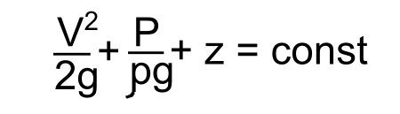

?
Задать вопрос

Найти
Web-дизайн и разработка мультимедийных изданий
Принцип работы гидравлического пресса
Работа гидравлического пресса основана на принципе гидравлического рычага.
С правилом механического рычага, наверняка, знаком каждый . Устройства, основанные на принципе механического рычага позволяют создавать значительные усилия, в различных механизмах.
Гидравлический рычаг, также, как и механический позволяет создавать огромные усилия, прием, как показывает практика, с помощью гидравлики, реализуются огромные усилия, не достигаемые механическими или электрическими приводами.
Принцип действия гидравлического рычага, также как и механического, основан на законе сохранения энергии, который в гидравлике для несжимаемой жидкости записывают в виде уравнения Бернулли:
В данной зависимости приняты обозначения:
На рисунке показана схема простейшего гидравлического пресса, состоящего из поршней большего и малого диаметров, установленных в сообщающихся цилиндрах, под поршнями находится жидкость. На поршень малого диаметра площадью S1 оказывается усилие F1, определим усилие F2, которое сможет преодолеть поршень площадью S2.
Давление под поршнем 1 можно вычислить по формуле:
p1=F1/S1
Давление под поршнем 2 будет определяться зависимостью:
p2=F2/S2
Согласно закону Паскаля который является следствием законом сохранения энергии давление, приложенное к жидкости передается всем точкам этой жидкости одинаково во всех направлениях.
p1=p2=p
Получается, что:
F1/S1=F2/S2
F2=F1*S2/S1
Сила на втором поршне будет увеличена пропорционально соотношению
площадей поршней . Чем больше площадь второго поршня, и чем меньше площадь
первого тем больший коэффициент усиления можно получить на гидравлическом
рычаге.
Величина перемещения поршня 2 зависит от объема жидкости,
вытесненного поршнем 1. Определим величину перемещения второго поршня l2,
при перемещении поршня 1 на расстояние l1.
l2=l1*S1/S2
Так как первый поршень меньше второго, то расстояние на которое переместится второй поршень будет меньше расстояния, на который переместится первый поршень.
Получается, что представленная конструкция позволила значительно увеличить усилие, но при этом произошло снижение величины перемещения.
Наиболее часто используют классификации прессов по следующим признакам.
По расположению рабочих цилиндров:
По количеству рабочих цилиндров:
По конструкции:
По типу привода:
Гидравлический привод позволяет реализовать различные усилия и скорости перемещения выходного звена пресса. Скорость перемещения выходного звена может варьироваться в диапазоне от 0,1 мм/с до 300 мм/с.
Одним из ключевых преимуществ гидравлических прессов является простота регулирования силы и возможность реализации больших усилий.
Силу, развиваемую гидравлическим прессом можно определить как произведение давления в полости гидроцилиндра на площадь поршня:
F=p*S
В зависимости от конструкции гидравлические прессы способны развивать усилие от нескольких тонн, до 70 000 тс (тонн силы).
Гидравлические прессы применяют:
Гидравлические прессы широко используют в металлургии для для горячей и холодной штамповки, выдавливания, прошивки, гибки, правки, резки металла.
В пищевой промышленности из-за недопустимости попадания частиц масла в продукты используют пневматические прессы.